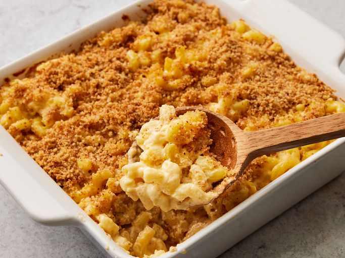

Mac and Cheese

Description
This homemade mac and cheese is topped with buttered bread crumbs for pure comfort food.
It's easy to make the cheese sauce from scratch, starting with a roux and adding milk, Cheddar,
and Parmesan to make a rich, decadent sauce that coats every nook and cranny of the noodles.
Ingredients
- Macaroni
- Butter
- Flour
- Milk
- Cheese
- Seasoning
- Bread crumb
Steps
- Boil the noodles, drain, and transfer to a prepared baking dish.
- Make the cheese sauce, pour the sauce over the noodles, and stir.
- Make the topping, spread it over macaroni and cheese, and sprinkle with paprika.
- Bake the mac and cheese until the topping is golden brown.